Todos os caminhos levam me levaram a Roma
passeio aleatório de um Estatístico até a ONU/FAO
Luís Silva e Silva | Encontro Comemorativo - UFMG | Outubro 2024
Find me at…
@lgsilvaesilva
@lgsilvaesilva
@lgsilvaesilva
lgsilvaesilva.github.io
“The best thing about being a statistician is that you get to play in everyone’s backyard.”

John Tukey (1915 - 2000)
Passeio Aleatório
de um Estatístico
Graduação (2007 - 2010)
Muita Matemática (Cálculo IV)
Várias disciplinas do DCC
- Estrutura de dados
- Programação
- Teoria de Filas
- Programação Linear (Otimização)
Estágio - CAEd
Monitor: Probabilidade e Est. Computationcal
Conheço → Odeio → Amo → R
Graduação + Estágio + Monitoria
Hard skills
Manipulação de grande bases de dados
Análise de dados
Aprendo SPSS
Teoria de Resposta ao Item
Estatística Multivariada
Aprendo R
Probabilidade
Soft skills
Relacionamento profissional
Hierarquia institucional
Desenvolvimento emocional
Compartilhar conhecimento
Colaboração
Mestrado: Plataforma Arauca
Qual a distância que um indivíduo deve percorrer até que alcance uma região onde possa ter um atendimento médico?
Mestrado: Plataforma Arauca
Medicina Intensiva
Minas Gerais
Taxa Nacional: ⋍ 3 por 100 mil habitantes.
Todas as especialidades médicas
Todos os municípios do Brasil (~5570)
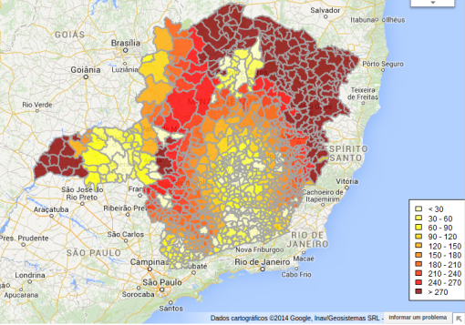
Mestrado: Plataforma Arauca
Medicina Intensiva
Minas Gerais
Taxa Nacional: ⋍ 3 por 100 mil habitantes.
Todas as especialidades médicas
Todos os municípios do Brasil (~5570)
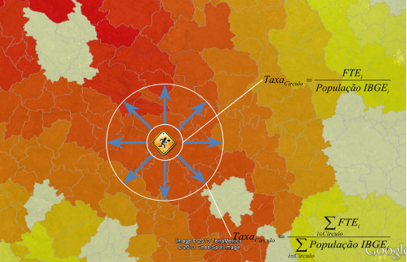
Mestrado: Plataforma Arauca
Medicina Intensiva
Minas Gerais
Taxa Nacional: ⋍ 3 por 100 mil habitantes.
Todas as especialidades médicas
Todos os municípios do Brasil (~5570)
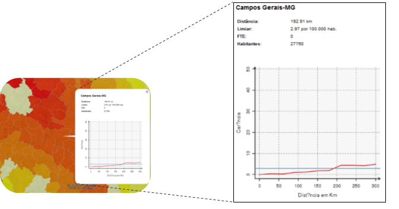
Mestrado: Pesquisa
Título: Novas ferramentas para visualização georreferenciadas de dados: uma integração entre R e Google Maps.
Pacote: aRouca
Mapa de Carência
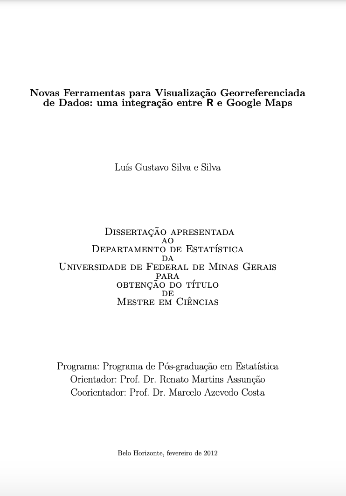
Mestrado: Prêmio SUS - 2013
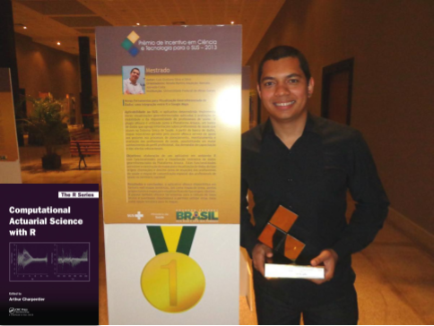
Mestrado + Projetos
Hard skills
Método ágil de desenvolvimento
Análise de dados georreferenciados
Java, Javascript, HTML, SVG
Desenvolvimento de pacotes em R
Aprendo + R
Aprofundamento teórico
Soft skills
Empatia
Resiliência
Desenvolvimento EMOCIONAL +
Compartilhar conhecimento +
Colaboração +
Escrita
Doutorado
- Programa SUS
Qual a origem dos meus pacientes e quais tratamentos eles fazem?
Quais os destinos dos pacientes residentes da minha cidade e os tipos de tratamento que eles fazem?
- InfoSAS
- Detecção de
fraudeanomalias no SUS.
- Detecção de
- Simon Fraser University
Doutorado: Programa SUS
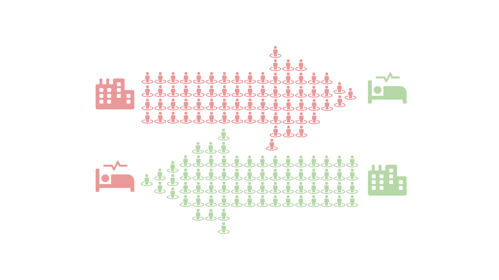
- Desenvolvido em R/shiny para o Ministério da Saúde.
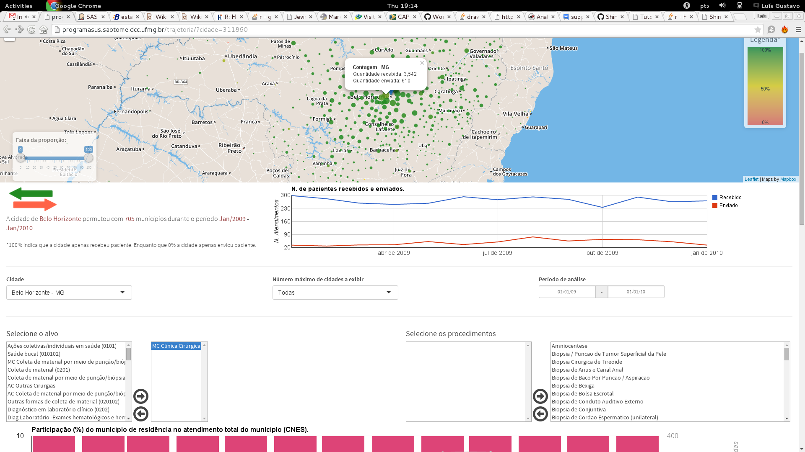
Doutorado: InfoSAS
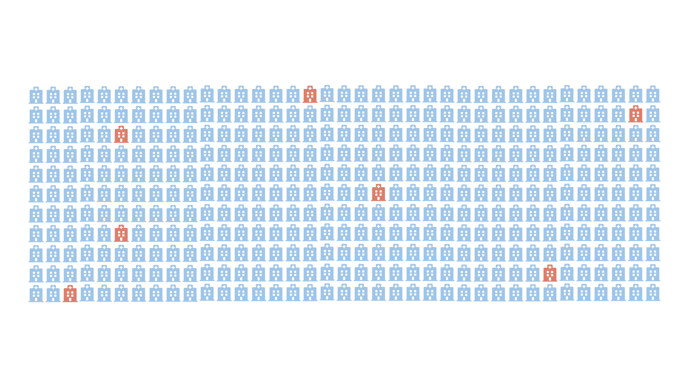
⋍ 5500 cidades no Brasil.
6000 estabelecimentos de saúde.
5000 conjuntos de procedimentos.
3 anos de dados mensais.
Desenvolvimento de algoritmos (⋍ 15) para detecção de anomalias nas séries históricas do SUS.
Desenvolvimento de relatórios (folha A4) para a visualização dos dados e resultados dos algoritmos.
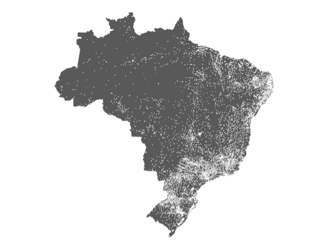
Doutorado: InfoSAS
Média
Mediana
Taxas (proporção)
Desvio-Padrão
Desvio Mediano Absoluto (MAD)
Percentil
Janela móvel
Bayes Empírico
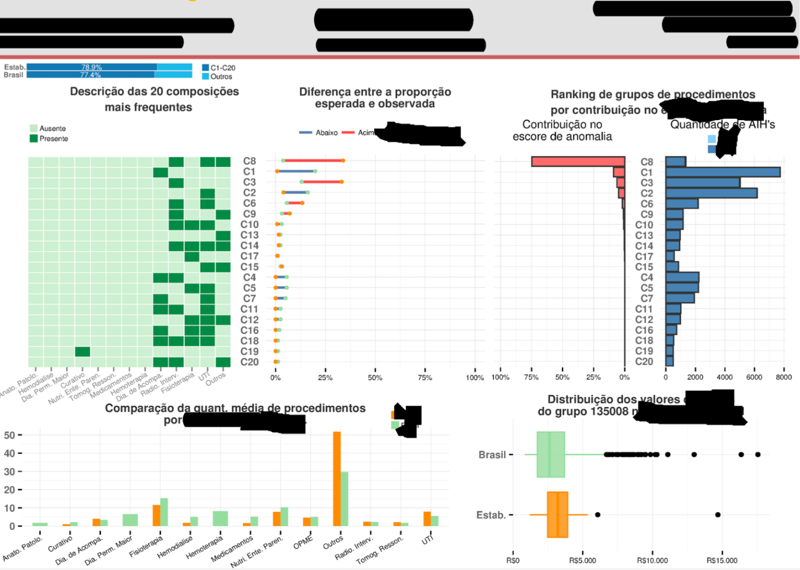
InfoSAS: relatórios
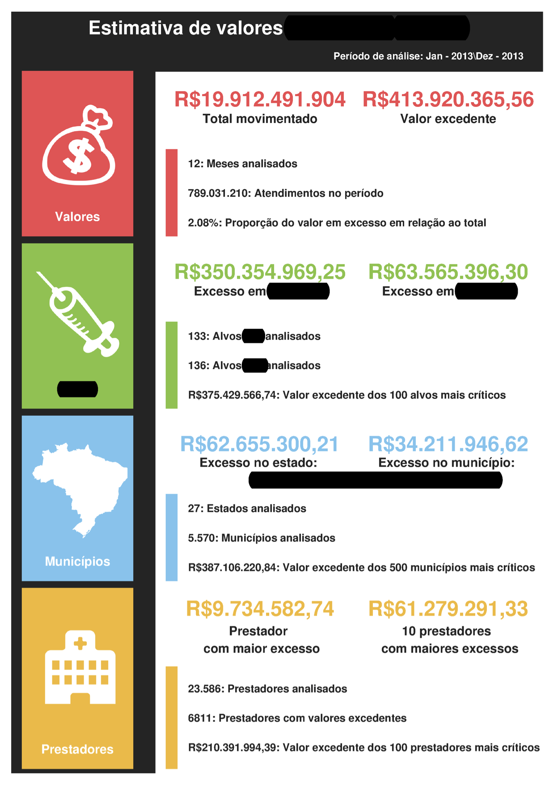
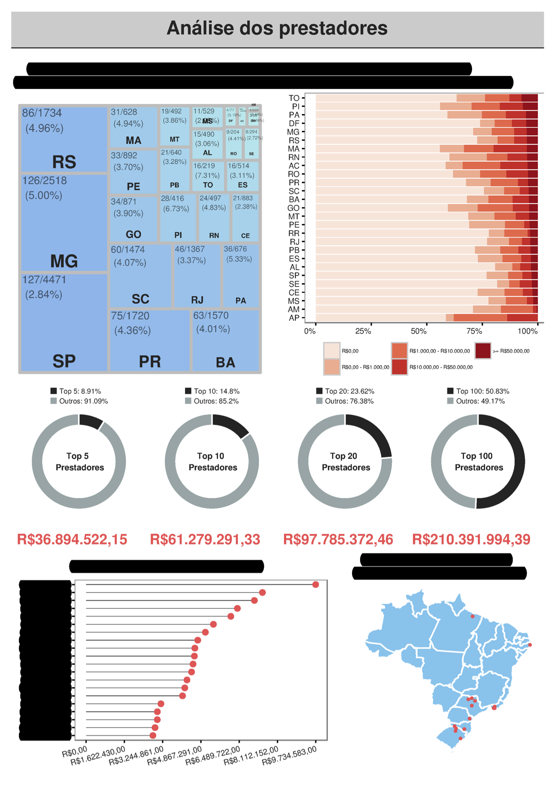
InfoSAS: relatórios
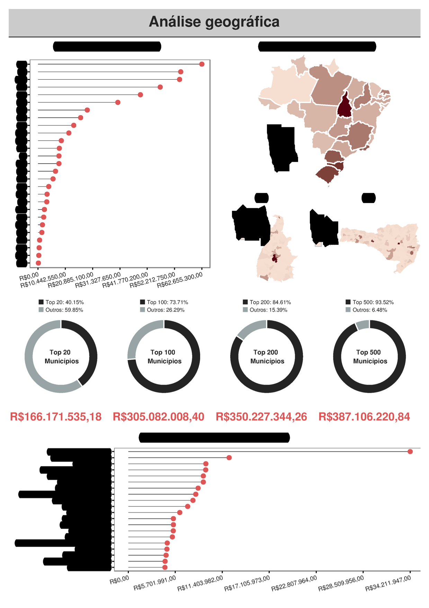
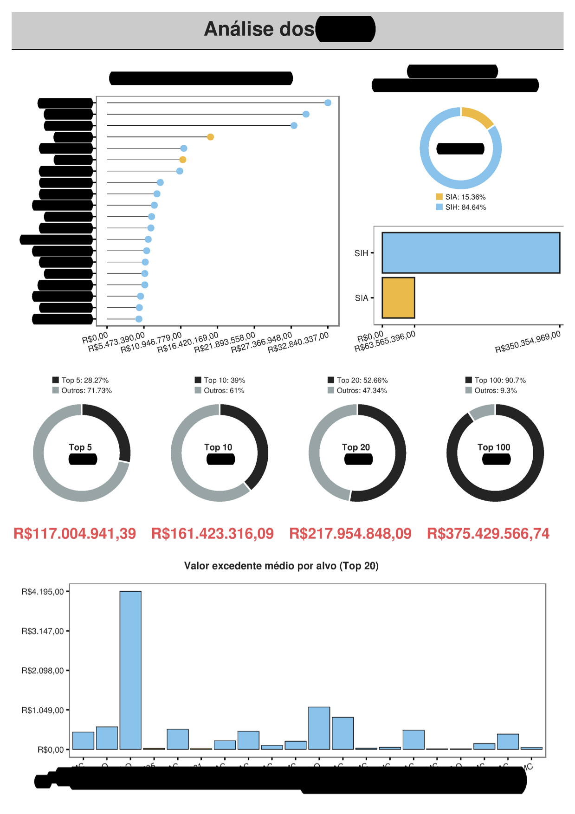
Doutorado: Pesquisa
Título: COWORDS: a probabilistic model for text visualization.
Como visualizar uma sequência de nuvem de palavras de forma que seja compacta, sem sobreposição das palavras, e que palavras que aparecem em mais de uma nuvem devem ficar na mesma posição ao longo das nuvens.
COWORDS é baseado em uma distribuição de probabilidade em que as configurações mais prováveis de serem obervadas desta distribuição são aquelas que seguem os princípios.
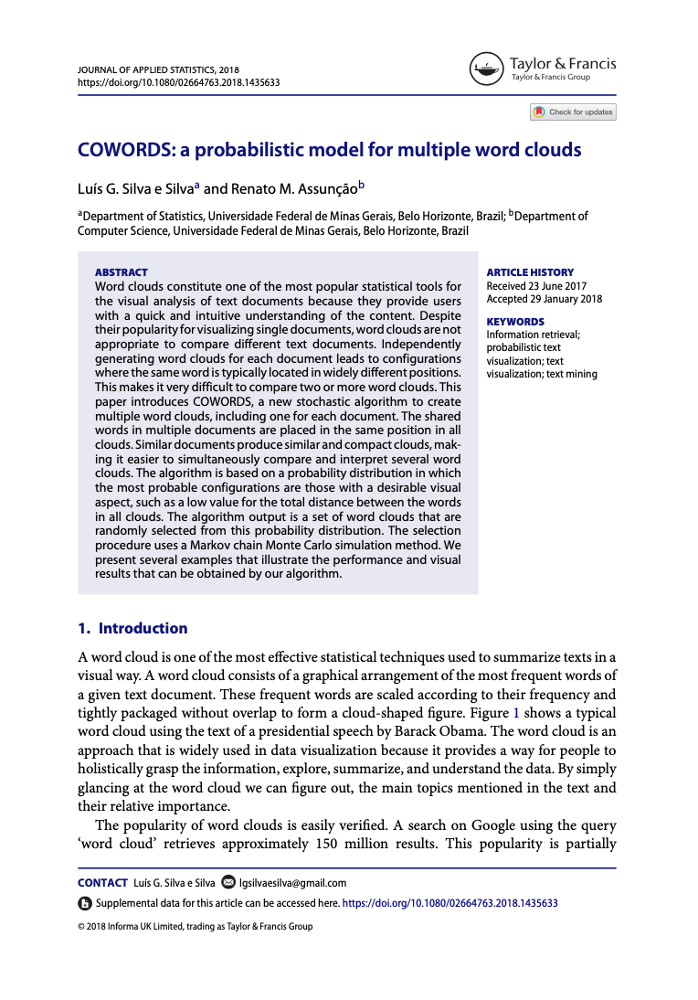
Doutorado: Pesquisa
Título: COWORDS: a probabilistic model for text visualization.
Como visualizar uma sequência de nuvem de palavras de forma que seja compacta, sem sobreposição das palavras, e que palavras que aparecem em mais de uma nuvem devem ficar na mesma posição ao longo das nuvens.
COWORDS é baseado em uma distribuição de probabilidade em que as configurações mais prováveis de serem obervadas desta distribuição são aquelas que seguem os princípios.
Doutorado: Pesquisa
Título: COWORDS: a probabilistic model for text visualization.
Como visualizar uma sequência de nuvem de palavras de forma que seja compacta, sem sobreposição das palavras, e que palavras que aparecem em mais de uma nuvem devem ficar na mesma posição ao longo das nuvens.
COWORDS é baseado em uma distribuição de probabilidade em que as configurações mais prováveis de serem obervadas desta distribuição são aquelas que seguem os princípios.
\[\pi(\mathbf{W})\propto\exp\left\{-\sum_{t=1}^{T}\sum_{i\sim j}{\alpha_{tij}^{2}}\right\}\prod_{t=1}^{T}\prod_{i \neq j}\mathbb{1}_{\left[S_{tij}\right]}\]
Simon Fraser University - SFU
⋍ 4 meses na Simon Fraser
Muita pesquisa e desafios
Muito aprendizado
Inglês
Abertura de uma nova porta
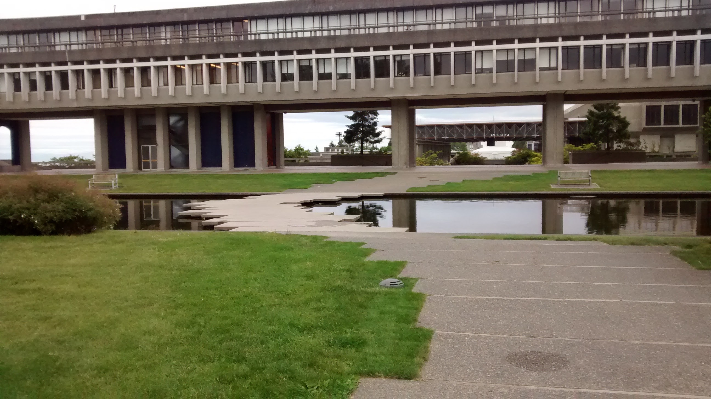
Doutorado + Projetos + Canadá
Hard skills
Programar c++
Computação Paralela
Análise de dados + + +
Aprendo + R + + +
Aprofundamento teórico + + + + +
Inglês
Soft skills
Pensamento Organizado - Lógico
Comunicação
Empatia +
Resiliência + +
Desenvolvimento EMOCIONAL + + +
Colaboração + +
Globalizado
O que a FAO faz?
–
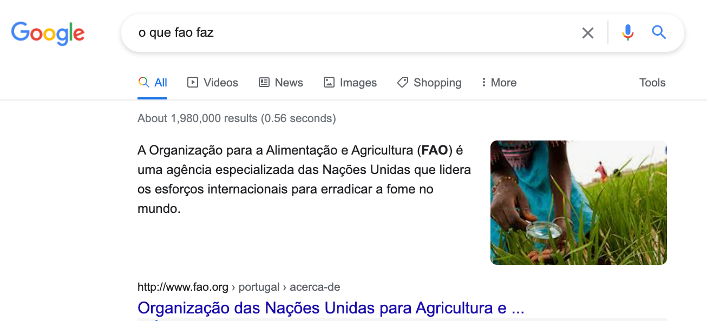
O que um Estastístico faz na FAO?
O que um Estastístico faz na FAO?
Obtenção e padronização dos dados nas codificações internacionais
Análise de dados faltantes: imputação através de modelos estatístico
Detecção de outliers e proposta de correção dos valores atípicos
Relatórios estatístico
Previsão: consumo de carne nos próximos 10 anos
Estimação: número de pessoas que vivem em insegurança alimentar por país, região, …
Meus 5 centavos…
Primeiro ano na FAO: meu principal produto
Obtenção dos dados
Codificação dos países e commodities
Tratamento de dados faltantes
Tratamento de valores discrepantes
Integração com o Sistema da FAO
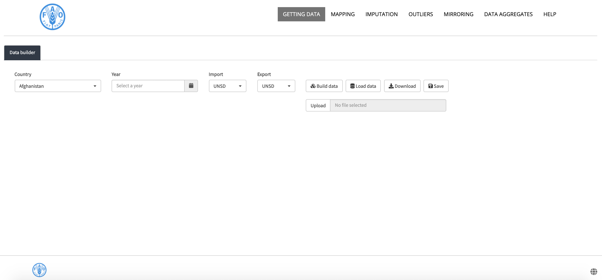
MetroPolicy: os países levam em conta o uso de estatística na tomada de decisão?
~4000 documentos texto (leis, políticas públicas, planos nacionais)
~200 países
7 idiomas
33 anos de dados
Topics Explorer Monitor: uma ferramenta que monitora o sentimento e a popularidade de tópicos que impactam os Objetivos de Desenvolvimento Sustentável (ODS).
Os artigos são classificados diariamente em um dos tópicos, e o sentimento é calculado com base no artigo.
Os usuários podem distinguir a imprensa nacional da imprensa internacional.
~10 milhões de notícias
~17.000 notícias diárias são coletadas, classificadas e sentimento calculado
Topics Explorer
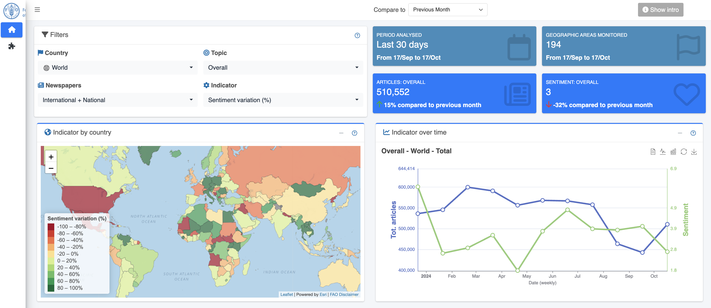
Topics Explorer
<iframe src=“https://foodandagricultureorganization.shinyapps.io/topics-stories-totem/” width=“100%” height=“75%” frameBorder = “0”, loading = “lazy”>
DataLab Trends
<iframe src=“https://foodandagricultureorganization.shinyapps.io/datalab-trends-news/” width=“100%” height=“75%” frameBorder = “0”, loading = “lazy”>
DataLab Trends
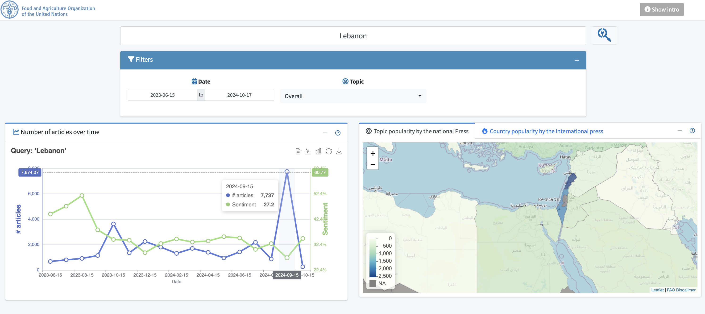
Food Prices
<iframe src=“https://foodandagricultureorganization.shinyapps.io/dl_foodprices/” width=“100%” height=“75%” frameBorder = “0”, loading = “lazy”>
DataLab webpage: https://www.fao.org/datalab/
http://www.fao.org/datalab/website/web/
FAO
Hard skills
Google cloud
Solr DB - NoSQL
Soft skills
Comunicação + +
Resiliência + + +
Trabalhar sob alta pressão
Desenvolvimento EMOCIONAL + + +
Colaboração + +
Globalizado + +
Trajetória até aqui…
Hard skills
Teoria Estatística: Probabilidade + Inferência + Modelagem
Programação: lógica de programação + R
Prática de análise de dados (colocar a mão na massa)
Inglês
Soft skills
Comunicação
Compartilhar
Resiliência
Gerenciamento EMOCIONAL
Curiosidade + Ação: caprendizado
Respeito
Obrigado!
@lgsilvaesilva
@lgsilvaesilva
@lgsilvaesilva
lgsilvaesilva.github.io
Todos os caminhos levam me levaram a Roma
passeio aleatório de um Estatístico até a ONU/FAO
Luís Silva e Silva | Encontro Comemorativo - UFMG | Outubro 2024